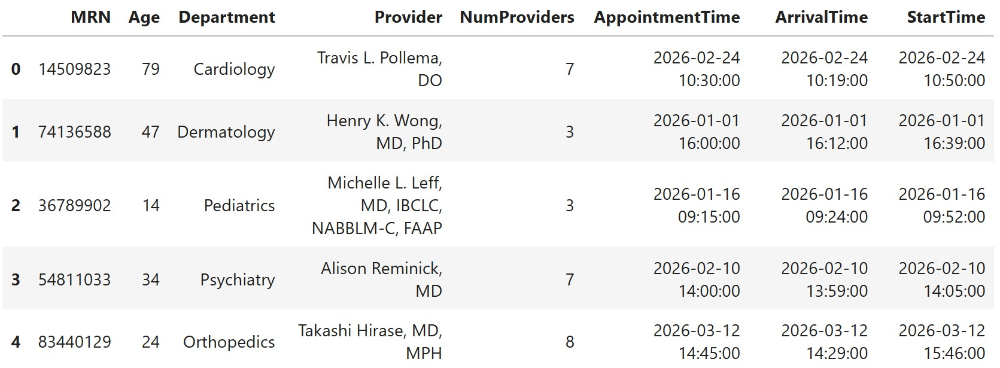
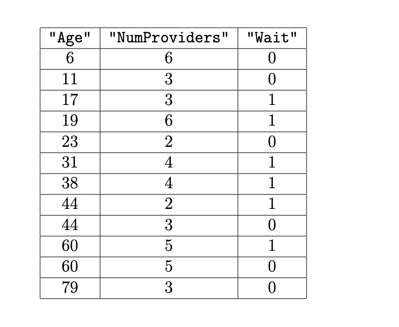
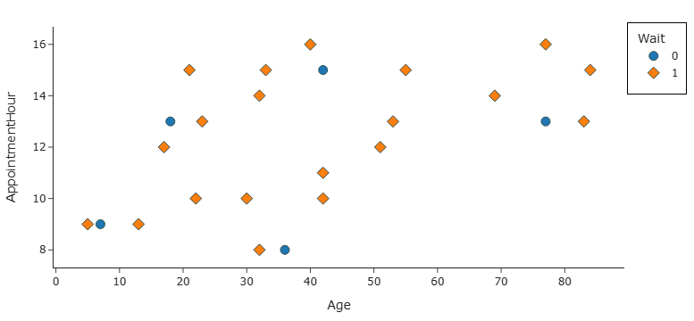
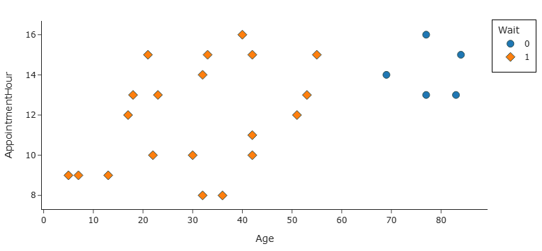

← return to practice.dsc80.com
Instructor(s): Janine Tiefenbruck
This exam was administered in-person. The exam was closed-notes, except students were allowed to bring two double-sided handwritten notes sheets. No calculators were allowed. Students had 180 minutes to take this exam. Questions 1, 2, 8, 9, and 10 are marked with an M; these test midterm material and were used for the redemption opportunity.
In this exam, you will work with a dataset of medical appointments at UC San Diego Health, to try to predict the amount of time patients had to wait for their appointments to start.
In the DataFrame med, each row represents a single
medical appointment attended by a patient (no-shows are not included).
The columns are:
"MRN" (str): Medical record number, a
unique identifier for the patient within the UC San Diego Health
system."Age" (int): The age of the patient."Department" (str): The medical department
where the appointment took place."Provider" (str): The medical provider
(doctor, or similar) for the appointment."NumProviders" (int): The number of
medical providers working in that department at the time of the
appointment."AppointmentTime" (pd.Timestamp): The time
at which the appointment was scheduled to begin, using a 24-hour clock.
Ends in one of :00:00, :15:00,
:30:00, :45:00."ArrivalTime" (pd.Timestamp): The time at
which the patient arrived, to the nearest minute. Patients may arrive
before or after their scheduled appointment time."StartTime" (pd.Timestamp): The time at
which the appointment actually began, to the nearest minute. The start
time is always at or after the arrival time and the scheduled
appointment time.There are no missing values in med. The first five rows
of med are shown below, though med has many
more.

Throughout the exam, assume that we have already run the necessary import statements.
To start, we need to calculate patient wait times, which are not
provided in our data. Suppose we execute the line of code below to add a
"WaitTime" column to med.
med["WaitTime"] = (med["StartTime"] - med[["ArrivalTime", "AppointmentTime"]].max(axis=1)).dt.seconds / 60Note that when we subtract two pd.Timestamp objects, the
result is a pd.Timedelta object, whose
.seconds attribute gives the time difference in seconds.
There is no way to access the time difference in minutes directly.
Fill in the blanks in the code below so that the
"WaitTime" column remains exactly the same as calculated
above. In other words, the code below should give an equivalent way to
calculate "WaitTime".
def wait_time(x):
return __(a)__
med["WaitTime"] = med.apply(__(b)__)What goes in blank (a)?
What goes in blank (b)?
Answers:
(x["StartTime"] - max(x["ArrivalTime"], x["AppointmentTime"])).seconds / 60
(or an equivalent expression using .max(axis=1) on the two
timestamp columns)wait_time, axis=1The vectorized version uses .max(axis=1) to take the
later of "ArrivalTime" and "AppointmentTime"
for each row. With .apply(..., axis=1), each row is passed
to wait_time as a Series, so we replicate that logic
row-by-row using Python’s max on the two timestamp values.
We then subtract from "StartTime", take
.seconds, and divide by 60 — just like in the original code
(note that we use .seconds, not .dt.seconds,
because the row-wise subtraction already returns a
Timedelta, not a Series of timedeltas).
What is the data type of the "WaitTime" column?
pd.Timestamp
pd.Timedelta
int
float
Answer: float
After subtracting timestamps and taking .seconds, we
have integers (seconds). Dividing those integers by 60
produces floating-point values, so the resulting column has dtype
float.
Determine the value of the following expression.
list(med["WaitTime"].iloc[:5])Answer:
[20.0, 27.0, 28.0, 5.0, 61.0]
This evaluates the wait-time calculation on the first five rows of
med as defined in the exam dataset.
What kind of values can appear in the "WaitTime" column?
Select all that apply.
Negative
Zero
Positive
Answer: Zero and Positive
The data description states that "StartTime" is always
at or after both "ArrivalTime" and
"AppointmentTime". That means the wait time in minutes is
always zero (if the appointment started exactly when the patient was
ready) or positive (if the patient waited). It cannot be negative.
Now that we’ve added a "WaitTime" column to
med, we’ll also add a "Wait" column containing
int values, defined as follows.
med["Wait"] = (med["WaitTime"] > 0).astype(int)For the rest of the exam, med has
"WaitTime" and "Wait" columns.
Doctors love having letters after their names! These letters usually
represent degrees, titles, or certifications. We’ll refer to them
collectively as credentials. In the
"Provider" column of med, each provider has at
least one credential. Credentials appear after the name and are
separated by commas. For example, the preview of med shows
that Dr. Takashi Hirase has two credentials (MD and MPH).
Write one line of code that evaluates to a Series
containing the number of credentials for each provider in the
"Provider" column of med. You
must use .split() and you may
not define any lambda functions.
Answer:
med["Provider"].str.split(", ").apply(len) - 1
Each credential after the provider’s name is preceded by
", ". Splitting on ", " gives one more piece
than the number of credentials (the provider’s name is the first piece).
Subtracting 1 gives the credential count. For example,
"Takashi Hirase, MD, MPH" splits into 3 pieces, so there
are 2 credentials.
Write a different single line of code that evaluates
to the same Series. This time, you may not use
.split() and you may not define any lambda
functions.
Answer:
med["Provider"].str.count(", ")
Each credential beyond the first adds exactly one ", "
to the string, so counting occurrences of ", " gives the
number of credentials directly.
Finally, we’ll add this Series to med as a new column
called "Credentials". This column is included in
med for the rest of the exam.
Consider the small subset of med shown in full below.
Recall that the "Wait" column was added after Question 1.
The data is sorted by "Age".

If we train a decision tree on this data to predict
"Wait" based on "Age" and
"NumProviders", what is the maximum possible accuracy the
decision tree could achieve? Give your answer as an exact decimal or
simplified fraction.
Answer: \frac{11}{12}
There are 12 rows in the dataset. A decision tree can achieve perfect
classification on 11 of them, but at least one row cannot be separated
from the rest using only "Age" and
"NumProviders". So the best possible accuracy is \frac{11}{12}.
Select the expression below that gives the weighted entropy
associated with using "Age" >= 15 as the root node of
the decision tree.
\frac{1}{6}\left(-\frac{2}{5}\log_2\frac{2}{5} - \frac{3}{5}\log_2\frac{3}{5}\right)
-\frac{2}{5}\log_2\frac{2}{5} - \frac{3}{5}\log_2\frac{3}{5}
\frac{1}{6}\left(-\frac{1}{2}\log_2\frac{1}{2} - \frac{1}{2}\log_2\frac{1}{2}\right)
-\frac{1}{2}\log_2\frac{1}{2} - \frac{1}{2}\log_2\frac{1}{2}
\frac{5}{6}\left(-\frac{2}{5}\log_2\frac{2}{5} - \frac{3}{5}\log_2\frac{3}{5}\right)
Answer: \frac{5}{6}\left(-\frac{2}{5}\log_2\frac{2}{5} - \frac{3}{5}\log_2\frac{3}{5}\right)
Splitting on "Age" >= 15 puts 2 rows in the left
child (both with "Wait" = 0, so entropy 0) and 10 rows in
the right child (6 with "Wait" = 1 and 4 with
"Wait" = 0). The weighted entropy is:
\frac{2}{12}(0) + \frac{10}{12}\left(-\frac{6}{10}\log_2\frac{6}{10} - \frac{4}{10}\log_2\frac{4}{10}\right) = \frac{5}{6}\left(-\frac{2}{5}\log_2\frac{2}{5} - \frac{3}{5}\log_2\frac{3}{5}\right)
The other expressions either use the wrong group sizes or compute unweighted entropy.
All but one of the following questions splits the data in such a way that the weighted entropy is the same. Which question yields a different weighted entropy than the others?
"NumProviders" <= 2
"NumProviders" <= 3
"NumProviders" <= 4
"NumProviders" <= 5
"NumProviders" <= 6
Answer: "NumProviders" <= 3
All of the listed splits except "NumProviders" <= 3
produce the same weighted entropy of 1. The split at 3 providers gives a
different weighted entropy (about 0.918).
What is the weighted entropy associated with any one of the questions you did not pick in part (c)? Give your answer as an exact decimal or simplified fraction.
Answer: 1
Each of the splits other than "NumProviders" <= 3 has
weighted entropy 1. This happens when each child node is evenly split
between the two classes (maximum entropy for binary classification).
sklearn is considering adding a new hyperparameter to
its DecisionTreeClassifier class. The new hyperparameter,
min_entropy, is used to determine when a node should be
split. A node will be split when its entropy is greater than or equal to
min_entropy. Otherwise, the node will be a leaf node.
Suppose we create training and testing datasets as follows.
X = med.drop(columns=["Wait"])
y = med["Wait"]
X_train, X_test, y_train, y_test = train_test_split(X, y, test_size=0.2)The function below selects a value for min_entropy based
on an input list of candidate values.
def find_min_entropy(candidates):
highest_score = -1
out = -1
for min_e in candidates:
dt = DecisionTreeClassifier(min_entropy=min_e)
dt.fit(X_train, y_train)
if dt.score(X_train, y_train) >= highest_score:
highest_score = dt.score(X_train, y_train)
out = min_e
return outWhat should the function return on an input list of
[0, 0.2, 0.4, 0.6, 0.8, 1]?
Answer: 0
When min_entropy = 0, nodes are allowed to split
whenever their entropy is nonnegative, so the tree can grow as much as
other stopping criteria allow. This gives the highest possible training
accuracy among the candidates. The function breaks ties by keeping the
first value that achieves the highest score, so it returns
0.
Circle one word in each box: If we train a decision tree with the
value selected in part (a) for min_entropy, the test
accuracy will likely be ____ than the train accuracy due to ____.
Answer: lower; overfitting
With min_entropy = 0, the tree can fit the training data
very closely (including noise), which typically leads to
overfitting. Overfit models often have
lower test accuracy than training accuracy because they
do not generalize as well.
Circle one word in each box: In general, increasing the value of
min_entropy ____ bias and ____ variance.
Answer: increases; decreases
A larger min_entropy prevents splits on low-entropy
nodes, producing a simpler tree. Simpler models have higher
bias (they may underfit) and lower variance
(they are less sensitive to small changes in the training data).
In Lab 9, you learned about k-nearest neighbors regression. A related machine learning algorithm is k-nearest neighbors classification, in which predictions are made by finding the k points in the training data that are nearest to the point we are trying to classify. We predict the class that the majority of those k points belong to (similar to the way in which decision trees in a random forest vote on a prediction). In this problem, we’ll use the standard Euclidean (L_2) distance to measure the distance between points.
In this problem, we’ll try to predict "Wait" based on
"Age" and "AppointmentHour", where
"AppointmentHour" is the hour from the
"AppointmentTime" column.
Suppose the training data consists only of the 25 points shown below. Determine the accuracy, precision, and recall of a 3-nearest neighbors classifier on this data.

Accuracy:
Precision:
Recall:
Answers: 0.8, 0.8, 1
For each point, the 3 nearest neighbors are found using Euclidean
distance in the "Age"–"AppointmentHour" plane.
Four of the five positive-class points are correctly classified; one
positive point is misclassified. That gives accuracy \frac{20}{25} = 0.8. Precision is \frac{4}{5} = 0.8 (4 true positives out of 5
predicted positives), and recall is \frac{4}{4} = 1 (all actual positives were
found).
Now suppose the training data consists only of the 25 points shown below. Determine the accuracy, precision, and recall of a 3-nearest neighbors classifier on this data.

Accuracy:
Precision:
Recall:
Answers: 1, 1, 1
On this dataset, every point is correctly classified by its 3 nearest neighbors, so accuracy, precision, and recall are all 1.
Finally, consider a 15-nearest neighbor classifier, which has the same accuracy on both datasets. What is that accuracy?
Answer: 0.8
With k = 15, the classifier uses a majority vote over nearly the entire dataset (25 points). This yields accuracy 0.8 on both scatter plots.
We want to use linear regression to predict "WaitTime"
based on
"NumProviders","Credentials" (from Question 2),"Department","AppointmentTime" is in the morning (before
12:00) or afternoon (12:00 or later).We want to ensure that the coefficients are interpretable and can be used to determine the most impactful single feature in the model’s predictions.
Fill in the code below to fit an appropriate Pipeline to
the data in med, which we will think of as our training
data for this problem.
def hour(df):
df.iloc[:, 0] = df.iloc[:, 0].dt.hour
return df
X = med[["NumProviders", "Credentials", "Department", "AppointmentTime"]]
y = med["WaitTime"]
pl = ____
pl.fit(X, y)There is only one blank in the code above, which should be filled with a capital letter corresponding to one of the answer choice options given below. This answer choice will have blanks of its own, which you should also fill in. Every time you use an answer choice, fill in the blanks in that answer choice with one of the following:
Some answer choices will be unused. You should leave any blanks in those answer choices empty.
Answer choice options:
A. drop = 'first'
B. remainder = 'drop'
C. remainder = 'passthrough'
D. PolynomialFeatures(___)
E. StandardScaler()
F. Binarizer(threshold = ___)
G. CountVectorizer()
H. FunctionTransformer(hour)
I. OneHotEncoder(___)
J. LinearRegression()
K.
ColumnTransformer([("one", ___, ["AppointmentTime"]), ("two", ___, ["Department"])], ___)
L.
ColumnTransformer([("one", ___, [___]), ("two", ___, [___]), ("three", ___, [___])], ___)
M. make_pipeline(___, ___)
N. make_pipeline(___, ___, ___)
Answer: pl = N where
N = make_pipeline(K, E, J) and:
K = ColumnTransformer([("one", M, ["AppointmentTime"]), ("two", I, ["Department"])], C)M = make_pipeline(H, F) with
H = FunctionTransformer(hour) and
F = Binarizer(threshold=11)I = OneHotEncoder(A)
i.e. OneHotEncoder(drop='first')C = remainder='passthrough'E = StandardScaler()J = LinearRegression()FunctionTransformer(hour) extracts the hour from
"AppointmentTime". Binarizer(threshold=11)
encodes afternoon appointments (hour \geq
12) as 1 and morning as 0.
OneHotEncoder(drop='first') encodes
"Department" without creating a redundant dummy column.
remainder='passthrough' keeps "NumProviders"
and "Credentials" as numeric features.
StandardScaler() puts all features on a comparable scale so
that coefficient magnitudes reflect relative impact on
"WaitTime". LinearRegression() is the final
estimator.
Suppose we derive a numerical feature
"AppointmentTimeSeconds" which measures the
"AppointmentTime" in seconds since midnight. Then we use
linear regression to fit a prediction rule of the form:
\text{predicted `"WaitTime"'} = w_0 + w_1 \cdot \text{`"Age"`} + w_2 \cdot \text{`"NumProviders"`} + w_3 \cdot \text{`"AppointmentTimeSeconds"`}
Consider each of the following changes to the model above, and determine which coefficients in the fit model may change. Select all coefficients that may change. Note that we are changing the original model each time, not stacking changes on top of one another.
Change "AppointmentTimeSeconds" to
"AppointmentTimeMinutes", which is measured in minutes
since midnight.
w_0
w_1
w_2
w_3
Answer: w_3
Changing the unit from seconds to minutes scales the appointment-time feature by a factor of 60. To produce the same predictions, w_3 must change (it becomes 60 times smaller). The other features are unchanged, so w_0, w_1, and w_2 do not need to change.
Remove the intercept term w_0.
w_1
w_2
w_3
Answer: w_1, w_2, and w_3
Removing the intercept forces the regression through the origin. The optimal slope coefficients generally all change when the intercept is removed, because the model can no longer shift predictions up or down independently of the features.
Add a new feature, which is 3 \cdot \text{`"Age"`} + \text{`"NumProviders"`}.
w_0
w_1
w_2
w_3
Answer: w_1 and w_2
The new feature is a linear combination of "Age" and
"NumProviders", which introduces multicollinearity. There
are many equivalent ways to distribute the effect across the old and new
features, so w_1 and w_2 may change. w_0 and w_3
are not necessarily affected.
Add a new feature, which is "Age"/"NumProviders".
w_0
w_1
w_2
w_3
Answer: w_0, w_1, w_2, and w_3
Adding a nonlinear combination of existing features changes the shape of the relationship the model can capture, so all coefficients in the fit model may change.
We suspect that some "Provider"s have longer
"WaitTime"s than others. Fill in the blanks below to add a
column to med called "EstimatedWaitTime" which
contains the median "WaitTime" for appointments with the
same "Provider".
med["EstimatedWaitTime"] = (med.groupby(__(a)__)[__(b)__]
.__(c)__(__(d)__))What goes in blank (a)?
What goes in blank (b)?
What goes in blank (c)?
What goes in blank (d)?
Answers:
"Provider""WaitTime"transformnp.median.groupby("Provider")["WaitTime"] groups wait times by
provider. .transform(np.median) computes the median wait
time for each provider and broadcasts it back to every row with that
provider — exactly what we need for
"EstimatedWaitTime".
We suspect that some "Department"s are frequently
running behind schedule and may occasionally have very high wait times.
Fill in the blanks below so the result is a Series, indexed by
"Department", containing the 95th percentile of
"WaitTime" for each "Department" in which at
least 75 percent of appointments have a "Wait". If less
than 75 percent of appointments in a given "Department"
have a "Wait", the "Department" should not
appear in the Series. Recall that np.percentile(x, 95)
calculates the 95th percentile of x.
(med.groupby(__(a)__).__(b)__(__(c)__)
.groupby(__(d)__)[__(e)__].__(f)__(__(g)__))What goes in blank (a)?
What goes in blank (b)?
What goes in blank (c)?
What goes in blank (d)?
What goes in blank (e)?
What goes in blank (f)?
What goes in blank (g)?
Answers:
"Department"filterlambda df: df["Wait"].mean() >= 0.75"Department""WaitTime"agg (or aggregate or
apply)lambda s: np.percentile(s, 95)First, .groupby("Department").filter(...) keeps only
departments where at least 75% of appointments have a wait
("Wait" mean \geq 0.75).
Then we group again by "Department", select
"WaitTime", and aggregate with the 95th percentile.
Departments that fail the filter are excluded from the final Series.
Suppose we have access to another DataFrame that contains billing
information. The rows are the same as in med, but there are
only three columns, "MRN", "AppointmentTime",
and "Billed". The "Billed" column contains the
amount that the patient was billed for their medical services at the
time of the appointment.
Suppose patients are billed for services at the time of their
appointment, unless the services are very complex (such as a surgical
procedure). For complex procedures, the "Billed" column is
left empty, and patients are charged for services at a later date. In
this scenario, what is the most likely missingness mechanism of the
"Billed" column?
missing by design (MD)
missing not at random (MNAR)
missing at random (MAR)
missing completely at random (MCAR)
Answer: missing not at random (MNAR)
Whether "Billed" is missing depends on the complexity of
the procedure — information that is not recorded in the dataset. Since
the missingness is related to an unobserved variable (procedure
complexity), it is MNAR.
Now suppose we merge the billing DataFrame with med on
"MRN" and "AppointmentTime".
We want to do a permutation test at the 0.05 significance level to
decide if the missingness mechanism of the "Billed" column
is more likely MCAR or MAR dependent on "Department". Which
of the following test statistics could be used for this permutation
test? Select all that apply.
difference of means
absolute difference of means
total variation distance (TVD)
K-S statistic
none of these
Answer: total variation distance (TVD)
To compare MCAR vs. MAR dependent on "Department", we
can compare the distribution of "Department" (or an
indicator for missingness) across groups. TVD measures
how different two distributions are and is appropriate for this kind of
permutation test on categorical data, as discussed in the imputation and
hypothesis testing lectures.
Suppose the p-value comes out to 0.03. What can we conclude? Select all that apply.
The missingness mechanism is more likely MCAR than MAR.
The missingness mechanism is more likely MAR than MCAR.
The missingness mechanism is not MD.
The missingness mechanism is not MNAR.
None of the above is a valid conclusion.
Answer: The missingness mechanism is more likely MAR than MCAR.
At the 0.05 significance level, a p-value of 0.03 provides evidence against the null hypothesis that missingness is MCAR. That suggests missingness is more likely MAR than MCAR. We cannot conclude anything about MD or MNAR from this test alone.
Suppose additionally that on March 1, 2026, UC San Diego Health experienced a technical outage and all the billing data for that day was lost. Which imputation strategy is most appropriate if we want to make sure the mean and standard deviation don’t change much as a result of the imputation?
mean imputation
probabilistic imputation
mean imputation, conditional on "Department"
probabilistic imputation, conditional on
"Department"
Answer: probabilistic imputation, conditional on
"Department"
Probabilistic imputation samples from a distribution
rather than filling every missing value with a single number, which
better preserves variation in the data. Doing it conditional on
"Department" accounts for differences in billing
across departments. Plain mean imputation would collapse variance and
distort the standard deviation.
Dr. Zheng and Dr. Golder are two medical doctors at UC San Diego
Health. They each create a DataFrame of patients they have seen in the
last year. Suppose that these DataFrames are called dr_z
and dr_g and that each DataFrame includes a
"MRN" column, which uniquely identifies patients.
Consider each of the following scenarios describing the overlap of
dr_z and dr_g, and in each scenario, determine
the number of rows in the DataFrame created by merging dr_z
with dr_g using inner, outer, left, and right joins.
dr_z.merge(dr_g, on="MRN", how=???)dr_z has 100 rows, all representing distinct
patients.dr_g has 80 rows, all representing distinct
patients.how = "inner":
how = "outer":
how = "left":
how = "right":
Answers: 20, 160, 100, 80
dr_z (shared
rows get matched columns from dr_g).dr_g.dr_z has 50 rows, all representing distinct
patients.dr_g has 15 rows, all representing distinct
patients.dr_g also appear in
dr_z.how = "inner":
how = "outer":
how = "left":
how = "right":
Answers: 15, 50, 50, 15
Every dr_g patient is in dr_z, so inner and
right both have 15 rows. Outer and left include all 50 patients from
dr_z (the 35 dr_z-only patients appear with
missing dr_g columns in a left join).
dr_z has 60 rows, representing 30 patients each
appearing twice.dr_g has 80 rows, representing 40 patients each
appearing twice.dr_z and
dr_g.how = "inner":
how = "outer":
how = "left":
how = "right":
Answers: 40, 140, 80, 100
With duplicate rows, each shared patient contributes 2 \times 2 = 4 rows to an inner join (10 \times 4 = 40). Outer: 60 + 80 - 40 = 140. Left keeps all 60
dr_z rows (20 shared-patient rows each match 2
dr_g rows → 40 matched rows, plus 40 dr_z-only
rows). Right keeps all 80 dr_g rows (40 matched + 60
dr_g-only).
Suppose we train a unigram, bigram, and trigram model on the following corpus.
corpus = "Patient is ill. Patient is in pain. Ill patient will recover
in time."We tokenized the corpus as follows before training our models.
corpus.lower().split()Now, we’d like to determine the probability of generating the sentence below, according to each model.
"Patient is in time."For each part, give your answer as a simplified fraction (preferred) or a product of simplified fractions.
Determine the probability of the sentence above, according to the unigram model.
Answer: \frac{3}{13} \cdot \frac{2}{13} \cdot \frac{2}{13} \cdot \frac{1}{13}
After tokenization, the corpus has 13 tokens: "patient"
appears 3 times, "is" and "in" each appear 2
times, and "time." appears once. Under a unigram model, we
multiply the probability of each token independently:
P(\text{patient}) \cdot P(\text{is}) \cdot P(\text{in}) \cdot P(\text{time.}) = \frac{3}{13} \cdot \frac{2}{13} \cdot \frac{2}{13} \cdot \frac{1}{13}
Determine the probability of the sentence above, according to the bigram model.
Answer: \frac{1}{26}
For a bigram model, we use the unigram probability of the first token and then multiply conditional probabilities for each subsequent token. From the corpus:
"patient" is followed by
"is")"is" is followed by
"in")"in" is followed by
"time.")Multiplying gives \frac{3}{13} \cdot \frac{2}{3} \cdot \frac{1}{2} \cdot \frac{1}{2} = \frac{1}{26}.
Determine the probability of the sentence above, according to the trigram model.
Answer: 0
A trigram model conditions each token on the previous two tokens. The
sentence "patient is in time." requires the trigram
("is", "in", "time."), but in the training corpus
"is" followed by "in" is always followed by
"pain.", never "time.". Since this trigram
never appears in the corpus, its probability is 0, so the probability of
the entire sentence is 0.
On the website for UC San Diego Health, each provider has their own
page. We’ve scraped the HTML from one provider’s web page, which you can
find below. We then instantiated a BeautifulSoup object,
soup, from this HTML.
<html lang="en">
<head>
<link href="/assets/static/heroData-BGejBwUx.css" rel="stylesheet"/>
<title>Caitlin MacMillen, DO | Primary Care, Family Medicine, Osteopathic Medicine | UC San Diego Health</title>
<meta content="width=device-width, initial-scale=1, maximum-scale=5" name="viewport"/>
<meta content="Caitlin MacMillen is a Physician in San Diego with UC San Diego Health and specializing in Osteopathic Manipulative Treatment (OMT), Women's Health, Care for All Ages, Comprehensive Care for the Individual and Family, Overall Health and Well-Being, Family Planning." name="description"/>
<meta content="32.875663,-117.2133647" name="geo.position"/>
<meta content="San Diego,CA" name="geo.placename"/>
<meta content="US-CA" name="geo.region"/>
<script>window.yextAnalyticsEnabled=false;window.enableYextAnalytics=()=>{window.yextAnalyticsEnabled=true}</script>
<script type="application/ld+json">{
"@context": "https://schema.org",
"@graph": [
{
"@type": "Physician",
"@id": "https://providers.ucsd.edu/details/33243/primary-care-family-medicine-osteopathic-medicine",
"name": "Caitlin MacMillen, DO",
"usNPI": "1518321629",
"telephone": "(858) 657-8600",
"isAcceptingNewPatients": false,
"url": "https://providers.ucsd.edu/details/33243/primary-care-family-medicine-osteopathic-medicine",
"knowsLanguage": [{"@type": "Language", "name": "English"}],
"knowsAbout": ["Osteopathic Manipulative Treatment (OMT)", "Women's Health", "Care for All Ages", "Comprehensive Care for the Individual and Family", "Overall Health and Well-Being", "Family Planning"],
"address": {
"@type": "PostalAddress",
"streetAddress": "9333 Genesee Avenue",
"addressLocality": "San Diego",
"addressRegion": "California",
"postalCode": "92121",
"addressCountry": "US"
},
"aggregateRating": {"@type": "AggregateRating", "ratingValue": 4.93, "bestRating": 5, "ratingCount": 188}
}
]
}</script>
<script data-entity-id="16281938" id="yext-entity-data"></script>
<script async="" src="https://siteimproveanalytics.com/js/siteanalyze_14686.js"></script>
<script crossorigin="anonymous" src="https://kit.fontawesome.com/aa9c700570.js"></script>
</head>
<body>
<div id="reactele"></div>
</body>
</html>Consider the DOM tree for this document. How many children does the root node have?
1
2
3
4
5
none of these
Answer: 2
The root of the DOM tree is the <html> element. It
has two direct children: <head> and
<body>.
What does the following line of code evaluate to?
len(soup.find_all("script"))1
2
3
4
5
none of these
Answer: 5
soup.find_all("script") returns every
<script> tag in the document. There are five: the
inline analytics script, the JSON-LD script, the yext entity script, the
Siteimprove analytics script, and the Font Awesome script.
The latitude and longitude for the provider’s office location are
included in the document. Write one line of code that uses
soup.find() (not soup.find_all()) to extract
the latitude from soup, as a string
("32.875663").
Answer:
soup.find("meta", attrs={"name": "geo.position"}).get("content").split(",")[0]
The latitude and longitude are stored together in the
"content" attribute of the
<meta name="geo.position"> tag as
"32.875663,-117.2133647". We locate that tag with
soup.find(), read "content", and split on the
comma to get the latitude (the first value).
You’ll notice that the HTML includes some JSON-formatted data. Locate
the JSON object with keys "@context" and
"@graph". Fill in the blank in the code below to read this
JSON object in as a Python dictionary, dr_m.
dr_m_string = ___________
dr_m = json.loads(dr_m_string)
dr_mAnswer:
soup.find("script", attrs={"type": "application/ld+json"}).text
(or soup.find_all("script")[1].text)
The structured provider data is embedded in a
<script type="application/ld+json"> tag. We extract
the text inside that tag and pass it to json.loads.
Indexing into find_all("script")[1] also works because the
JSON-LD script is the second <script> tag in the
document.
Write one line of code that extracts the street address from
dr_m, as a string.
Answer:
dr_m["@graph"][0]["address"]["streetAddress"]
After parsing the JSON, the provider information is in the
"@graph" list. The first entry contains an
"address" dictionary, and "streetAddress"
holds the street address string
("9333 Genesee Avenue").
The function re.match(pat, s) checks for the regular
expression pat only at the beginning of string
s. For example, re.match("o", "hello") does
not find a match, but re.match("h", "hello") does.
The string "UC San Diego Health" has exactly two
lowercase a’s. Write a regular expression pattern,
pat, so that re.match(pat, s) finds a match if
and only if s has exactly two lowercase a’s.
Write clearly!
Answer: pat = r"[^a]*a[^a]*a[^a]*$"
The pattern matches strings with exactly two lowercase
a’s from start to end:
[^a]* — zero or more characters that are not lowercase
aa — the first lowercase a[^a]* — zero or more non-a characters
between the two a’sa — the second lowercase a[^a]*$ — zero or more non-a characters
until the end of the stringThis allows any other characters (including uppercase letters) but
requires exactly two lowercase a’s. For example,
"UC San Diego Health" matches because it has two lowercase
a’s and no others.
ICD-10-CM codes (International Classification of Diseases, Tenth Revision, Clinical Modification) are codes used in the medical field to classify diagnoses, symptoms, and causes of death. Below are a few examples of ICD-10-CM codes and their associated meanings:
ICD-10-CM codes consist of 3 to 8 characters following a certain format:
Write a regular expression pattern, pat, so that
re.match(pat, s) finds a match if and only if
s is formatted like an ICD-10-CM code.
The following are some examples of incorrectly formatted codes that should not be matched.
Write clearly!
Answer:
pat = r"([A-Z]\d\d(\.[A-Z0-9]{1,4})?)$"
The pattern breaks down as follows:
[A-Z]\d\d — one capital letter followed by exactly two
digits (the required 3-character base code, e.g. G20)(\.[A-Z0-9]{1,4})? — optionally, a decimal point
followed by 1 to 4 uppercase letters or digits (the extension,
e.g. .909 or .01XS)$ — end of string, so nothing extra is allowedThis gives codes of length 3–8 and rejects invalid examples like
F27. (trailing dot with no extension), TX3.120
(two letters at the start), M27.56829 (extension too long),
and L220.9 (three digits before the optional decimal).